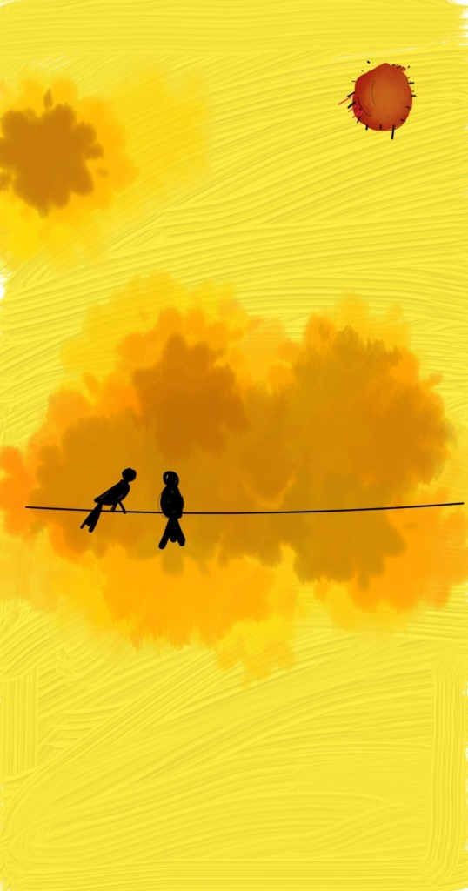

Tousif Islam (তৌসিফ ইসলাম)
Artsy
“Some believe that art is the imitation of nature; in fact, nature is so sublime that it cannot be imitated. However noble it may be, art cannot perform a single one of the miracles of nature. And besides, why imitate nature when it can be perceived by all those endowed with senses?”-- Kahlil Gibran, The Prophet
Literary
When I am not possessed by GWs, I enjoy writing poetry or short-stories - mostly in my vernacular language 'Bangla'.
Some of my writings could be found here.
Paintings
I find peace in painting - mostly landscapes. Portraits are too difficult, right?
Digital Arts
I am recently exploring digital arts. This is fun!

Sunset Clicks
I try to capture the evening sky wherever I go. These clicks have been taken in Kolkata (India), Bangalore (India), Mumbai (India), Marseille (France) and New Bedford (USA).